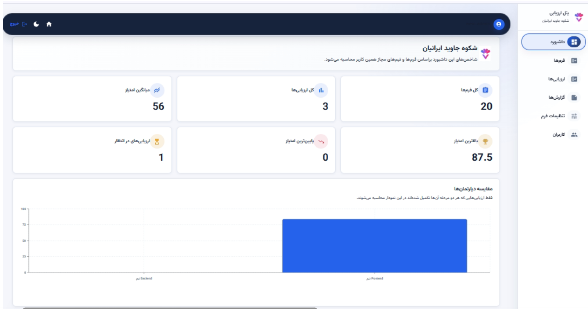

Enterprise / Product Work
Performance & 360° Evaluation
Performance reviews, 360-degree feedback, scoring and employee leaderboards.

Employee evaluation dashboard: forms, assessments, scores and comparative reporting.
Product Overview
Enterprise performance evaluation and 360-degree feedback, supported by scoring, employee leaderboards and HR dashboard views.
Business Problem
Evaluation involves multiple participants and feedback sources. HR teams and managers need clear workflows and a shared view of review status and scoring.
Target Users
HR teams, managers and employees participating in performance and feedback processes.
My Role & Ownership
As Product Owner at SJI from July 2019–August 2020, I managed requirements, workflows and delivery for performance evaluation, 360-degree feedback, scoring and employee leaderboards.
Product Discovery & Strategy
I worked with stakeholders and users to define requirements and evaluation workflows. Product planning connected participation in reviews with the scoring and visibility needed by organizational teams.
Key Product Decisions & Capabilities
Review and feedback forms connect to evaluation status, scoring and employee leaderboards. Dashboard views help HR teams and managers inspect summaries and follow the process.
Delivery & Cross-functional Collaboration
I coordinated requirements and delivery with stakeholder and user involvement. SJI team work brought the evaluation workflows and dashboard interfaces into the product.
Outcomes & Product Value
The product gives organizational teams a structured way to manage evaluation, feedback and score visibility across the review process.
Product Screens
Explore the interfaces and workflows below.